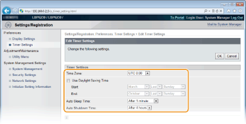
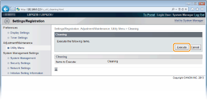
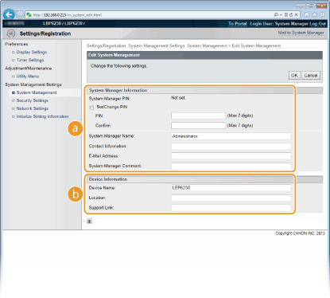
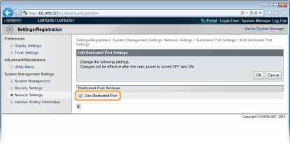
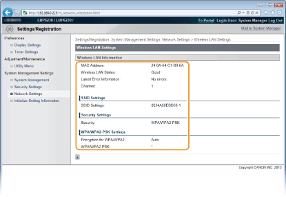

0KU8-03A
Esta seção descreve os itens de menu que podem ser definidos usando o Remote UI. As configurações padrão são marcadas com uma adaga ().
|
Menu [Preferences]
Menu [Adjustment/Maintenance]
Menu [System Management Settings]
|
Selecione o idioma usado nas telas do Remote UI.
|
Remote UI Language
Chinese (Simplified)
English
French
German
Italian
Japanese
Spanish
|
Acesse o Remote UI (Iniciando o Remote UI)  [Settings/Registration] [Display Settings] [Edit] Selecione o idioma de exibição [OK]
[Settings/Registration] [Display Settings] [Edit] Selecione o idioma de exibição [OK]

[Remote UI Language]
Selecione o idioma usado nas telas do Remote UI.
Selecione o idioma usado nas telas do Remote UI.
Faça as configurações de hora e fuso horário.
|
Time Zone
UTC-12:00 a UTC-5:00 a UTC+12:00
Use Daylight Saving Time
Off
On
Start
January a March a December
1st a 2nd a Last
Monday para Sunday
End
January a November a December
1st para Last
Monday para Sunday
Auto Sleep Time
Off
After 1 minute
After 5 minutes
After 10 minutes
After 15 minutes
After 30 minutes
After 60 minutes
Auto Shutdown Time
Off
After 1 hour
After 2 hours
After 3 hours
After 4 hours
After 5 hours
After 6 hours
After 7 hours
After 8 hours
|
Acesse o Remote UI (Iniciando o Remote UI) [Settings/Registration] [Timer Settings] [Edit] Item configurações [OK]

[Time Zone]
Defina o fuso horário da região onde a impressora será usada.

UTC
A Hora Universal Coordenada (UTC) é o principal padrão de horário pelo qual o mudo regula os relógios e horários. O fuso horário UTC correto é necessário para as comunicações da Internet.
Defina o fuso horário da região onde a impressora será usada.
UTC
A Hora Universal Coordenada (UTC) é o principal padrão de horário pelo qual o mudo regula os relógios e horários. O fuso horário UTC correto é necessário para as comunicações da Internet.
[Use Daylight Saving Time]
Ativar ou desativar o horário de verão. Se o horário de verão estiver ativo, especifique as datas inicial e final de vigor do horário de verão.
Ativar ou desativar o horário de verão. Se o horário de verão estiver ativo, especifique as datas inicial e final de vigor do horário de verão.
[Auto Sleep Time]
A impressora entra em modo de suspensão automaticamente quando permanece inativa por determinado período de tempo. Especifique a duração do período de tempo até a impressora entre em suspensão automática. Recomendamos usar as configurações padrão de fábrica para economizar energia. Configurando o modo de suspensão
A impressora entra em modo de suspensão automaticamente quando permanece inativa por determinado período de tempo. Especifique a duração do período de tempo até a impressora entre em suspensão automática. Recomendamos usar as configurações padrão de fábrica para economizar energia. Configurando o modo de suspensão
[Auto Shutdown Time]
É possível configurar a impressora para desligar automaticamente se ela permanecer inativa por determinado período de tempo. Isso evita desperdiçar energia quando nos esquecemos de desligar a impressora. Especifique o período de tempo até a impressora se desligar sozinha. Configurando o encerramento automático
É possível configurar a impressora para desligar automaticamente se ela permanecer inativa por determinado período de tempo. Isso evita desperdiçar energia quando nos esquecemos de desligar a impressora. Especifique o período de tempo até a impressora se desligar sozinha. Configurando o encerramento automático
Você pode limpar a unidade de fixação dentro da impressora.
Limpe a unidade de fixação se aparecerem pontos ou riscos pretos nas impressões. Observe que você não pode limpar a unidade de fixação quando a impressora possui documentos aguardado impressão. Para limpar a unidade de fixação, você precisa de papel comum tamanho A4. Antes de começar, carregue o papel tamanho A4 na multi-purpose tray ou abertura de alimentação manual (Carregando papel na bandeja multifuncional Carregando Papel na Abertura de Alimentação Manual).
Faça login no Remote UI (Iniciando o Remote UI) [Settings/Registration] [Utility Menu] [Cleaning] [Execute] [OK]

 |
O papel é alimentado lentamente na impressora e a limpeza começa. A limpeza é feita quando o papel é completamente ejetado.
A limpeza não pode ser cancelada depois de iniciada. Aguarde a conclusão da limpeza (aprox. 90 segundos).
|
Você pode especificar um PIN (senha do administrador do sistema) ao fazer login no Remote UI em Modo de Administrador de Sistema, e você pode registrar informações sobre o administrador do sistema, como nome e informações de contato. Você também pode registrar um nome para identificar esta impressora e registrar sua localização.
|
System Manager Information
System Manager PIN
System Manager Name
Contact Information
E-Mail Address
System Manager Comment
Device Information
Device Name
Location
Support Link
|
Acesse o Remote UI (Iniciando o Remote UI) [Settings/Registration] [System Management] [Edit] Item configurações [OK]

 [System Manager Information]
[System Manager Information]Especifique o PIN e outras informações do administrador de sistema. Definindo senhas de administrador de sistema
 [Device Information]
[Device Information][Device Name]
Digite até 32 caracteres alfanuméricos para o nome da impressora.
Digite até 32 caracteres alfanuméricos para o nome da impressora.
[Location]
Digite até 32 caracteres alfanuméricos para o local da impressora.
Digite até 32 caracteres alfanuméricos para o local da impressora.
[Support Link]
Insira um link para informações de suporte a respeito da impressora. O link pode conter até 128 caracteres alfanuméricos. O link é exibido na Página do Portal (página principal) do Remote UI.
Insira um link para informações de suporte a respeito da impressora. O link pode conter até 128 caracteres alfanuméricos. O link é exibido na Página do Portal (página principal) do Remote UI.
Ative ou desative a comunicação codificada via SSL e a filtragem de pacotes de endereço IP.
Remote UI Settings
Selecione se deseja usar a comunicação codificada SSL. Ativando a comunicação criptografada SSL para o Remote UI
|
Use SSL
Off
On
|
Key and Certificate Settings
Registre o par de chaves ou gere-os na impressora. Você pode verificar os pares de chaves registrados. Configurando as definições para pares de chave e certificados digitais
CA Certificate Settings
Registre um certificado CA. Um certificado de CA já vem pré-instalado. Você pode verificar os certificados CA registrados. Configurando as definições para pares de chave e certificados digitais
IP Address Filter
Especifique se aceitará ou recusará os pacotes enviados ou recebidos de dispositivos com endereços IP especificados.
IPv4 Address: Outbound Filter
Não permita que a impressora envie dados a um computador com um endereço IPv4 especificado. Especificando endereços IP para regras de firewall
|
Use Filter
Off
On
Default Policy
Reject
Allow
|
IPv4 Address: Inbound Filter
Rejeite os dados recebidos pela impressora desde um computador com um endereço IPv4 especificado. Especificando endereços IP para regras de firewall
|
Use Filter
Off
On
Default Policy
Reject
Allow
|
IPv6 Address: Outbound Filter
Não permita que a impressora envie dados a um computador com endereço IPv6 especificado.Especificando endereços IP para regras de firewall
|
Use Filter
Off
On
Default Policy
Reject
Allow
|
IPv6 Address: Inbound Filter
Rejeite os dados recebidos pela impressora desde um computador com um endereço IPv4 especificado. Especificando endereços IP para regras de firewall
|
Use Filter
Off
On
Default Policy
Reject
Allow
|
MAC Address Filter
Especifique se permitirá ou rejeitará os pacotes enviados ou recebidos de dispositivos com endereços MAC específicos.
Outbound Filter
Não permita que a impressora envie dados a um computador com um endereço MAC especificado. Especificando endereços MAC para regras de firewall
|
Use Filter
Off
On
Default Policy
Reject
Allow
|
Inbound Filter
Rejeitar os dados recebidos pela impressora de um computador com um endereço MAC especificado. Especificando endereços MAC para regras de firewall
|
Use Filter
Off
On
Default Policy
Reject
Allow
|
Faça as configurações relacionadas às funções de rede.
TCP/IP Settings
Especifique as configurações usando a impressora em uma rede TCP/IP, como configurações de endereço IP.
IPv4 Settings
Especifique as configurações para usar a impressora em uma rede IPv4. Definindo endereços IPv4 Configurando o DNS
|
IP Address Settings
Auto Acquire
Select Protocol
Off
DHCP
BOOTP
RARP
Auto IP
On
Off
IP Address
Subnet Mask
Gateway Address
DNS Settings
Primary DNS Server Address
Secondary DNS Server Address
Host Name
Domain Name
DNS Dynamic Update
Off
On
DNS Dynamic Update Interval: 0 a 24 a 48 (horas)
mDNS Settings
Use mDNS
Off
On
mDNS Name
DHCP Option Settings
Acquire Host Name
Off
On
DNS Dynamic Update
Off
On
|
IPv6 Settings
Especifique as configurações para usar a impressora em uma rede IPv6. Definindo endereços IPv6 Configurando o DNS
|
IP Address Settings
Use IPv6
Off
On
Stateless Address
Off
On
Use Manual Address
Off
On
IP Address
Prefix Length: 0 a 64 a 128
Default Router Address
Use DHCPv6
Off
On
DNS Settings
Primary DNS Server Address
Secondary DNS Server Address
Use Same Host Name/Domain Name as IPv4
Off
On
Host Name
Domain Name
DNS Dynamic Update
Off
On
Register Manual Address
Off
On
Register Stateful Address
Off
On
Register Stateless Address
Off
On
DNS Dynamic Update Interval: 0 a 24 a 48 (horas)
mDNS Settings
Use mDNS
Off
On
Use Same mDNS Name as IPv4
Off
On
mDNS Name
|
WINS Settings
Especifique as configurações para o WINS (Windows Internet Name Service), que fornece um nome NetBIOS para resoluções de endereço IP em um ambiente de rede mista de NetBIOS e TCP/IP. Configurando o WINS
|
WINS Resolution
Off
On
WINS Server Address
Scope ID
|
LPD Print Settings
Ative ou desative LPD, um protocolo de impressão que pode ser usado em uma plataforma de hardware ou sistema operacional. Configurando os protocolos de impressão e serviços da web
|
Use LPD Printing
Off
On
|
NetBIOS Settings
Defina um nome NetBIOS e um nome de grupo de trabalho que deve ser definido para registrar esta impressora com um servidor WINS. Configurando o NetBIOS
|
NetBIOS Name
Workgroup Name
|
RAW Print Settings
Ative ou desative RAW, um protocolo de impressão específico para Windows. Configurando os protocolos de impressão e serviços da web
|
Use RAW Printing
Off
On
|
WSD Settings
Ative ou desative a navegação automática e aquisição de informações da impressora usando o protocolo WSD que está disponível no Windows Vista, 7, 8, Server 2008 e Server 2012. Configurando os protocolos de impressão e serviços da web
|
Use WSD Printing
Off
On Use WSD Browsing
Off
On
Use Multicast Discovery
Off
On
|
SSL Settings
Especifique o par de chaves a ser usado ao fazer a comunicação codificada SSL com o Remote UI. Ativando a comunicação criptografada SSL para o Remote UI
Multicast Discovery Settings
Especifique se a impressora deve responder aos pacotes de descoberta quando a descoberta multicast é realizada na rede usando o Service Location Protocol (SLP). Configurando a comunicação SLP com o imageWARE
|
Respond to Discovery
Off
On
Scope Name
|
Port Number Settings
Altere números de porta para protocolos de acordo com o seu ambiente de rede. Alterando os números de portas
|
LPD
1 a 515 a 65535
RAW
1 a 9100 a 65535
HTTP
1 a 80 a 65535
SNMP
1 a 161 a 65535
WSD Multicast Discovery
1 a 3702 a 65535
Multicast Discovery
1 a 427 a 65535
|
MTU Size Settings
Selecione o tamanho máximo de pacotes que a impressora envia ou recebe. Alterando a unidade máxima de transmissão (MTU)
|
MTU Size
1300
1400
1500
|
SNTP Settings
Especifique se deseja obter a hora de um servidor de horário na rede. Configurando o SNTP
|
Use SNTP
Off
On
NTP Server Name
Polling Interval: 1 a 24 a 48 (horas)
|
SNMP Settings
Especifique as configurações para monitorar e controlar a impressora a partir de um computador executando um software compatível com SNMP. Monitorando e controlando a impressora com SNMP
|
SNMPv1 Settings
Use SNMPv1
Off
On
Community Name 1
MIB Access Permission 1
Read/Write
Read Only
Community Name 2
MIB Access Permission 2
Read/Write
Read Only
Dedicated Community Settings
Off
Read/Write
Read Only
SNMPv3 Settings
Use SNMPv3
Off
On
User Settings 1/User Settings 2/User Settings 3
Context Settings
Printer Management Information Acquisition Settings
Acquire Printer Management Information from Host
Off
On
|
Dedicated Port Settings
Ative ou desative a porta dedicada. A porta dedicada é usada quando se utiliza a Janela de Status da Impressora para fazer as configurações e adquirir informações sobre a impressora.
|
Use Dedicated Port
Off
On
|
Entre no Remote UI e faça login no Modo de Administrador de Sistema. (Iniciando o Remote UI) [Settings/Registration] [Network Settings] [Dedicated Port Settings] [Edit] Selecione se vai utilizar [OK] Reinicie a impressora.

[Use Dedicated Port]
Marque a caixa de seleção para usar a porta dedicada. Desmarque a caixa de seleção se não quiser usá-la.

Se você desmarcar a caixa de seleção, a Janela de Status da Impressora não obterá as informações da impressora.
Marque a caixa de seleção para usar a porta dedicada. Desmarque a caixa de seleção se não quiser usá-la.
Se você desmarcar a caixa de seleção, a Janela de Status da Impressora não obterá as informações da impressora.
Waiting Time for Connection at Startup
Especifique um tempo de espera para conectar-se a uma rede. Selecione a configuração dependendo do seu ambiente de rede. Definindo um tempo de espera para a conexão de rede
|
Waiting Time
0 a 300 (segundos)
|
Ethernet Driver Settings
Você pode especificar o modo de comunicação Ethernet (Half Duplex/Full Duplex), tipo de Ethernet (10BASE-T/100BASE-TX), e exibir o endereço MAC. Definindo suas configurações de Ethernet
|
Auto Detect
Off
On
Communication Mode
Half Duplex
Full Duplex
Ethernet Type
10BASE-T
100BASE-TX
MAC Address (exibir apenas)
|
Wireless LAN Settings
Você pode verificar as configurações da LAN sem Fio e informações de status. As configurações da LAN sem fio não podem ser alteradas a partir do Remote UI. Faça as configurações da LAN sem fio no computador usando a MF/LBP Network Setup Tool. (Conectando a uma rede LAN sem fio )
Acesse o Remote UI (Iniciando o Remote UI) [Settings/Registration] [Network Settings] [Wireless LAN Settings] Verifique as configurações e informações

[MAC Address]
Exibe o endereço MAC da LAN sem fio.
Exibe o endereço MAC da LAN sem fio.
[Wireless LAN Status]
Exibe o status de conexão (intensidade de sinal ) da LAN sem fio.
Exibe o status de conexão (intensidade de sinal ) da LAN sem fio.
[Latest Error Information]
Exibe informações sobre a falha mais recente para fazer uma conexão com a LAN sem fio.
Exibe informações sobre a falha mais recente para fazer uma conexão com a LAN sem fio.
[Channel]
Exibe o canal da LAN sem fio atualmente em uso.
Exibe o canal da LAN sem fio atualmente em uso.
[SSID Settings]
Exibe o SSID do roteador conectado da LAN sem fio.
Exibe o SSID do roteador conectado da LAN sem fio.
[Security Settings]
Exibe o tipo de codificação sendo aplicada.
Exibe o tipo de codificação sendo aplicada.
[WPA/WPA2-PSK Settings]/[WEP Settings]
Exibe as configurações atuais de WPA/WPA2-PSK e WEP.
Exibe as configurações atuais de WPA/WPA2-PSK e WEP.
Inicializa as configurações e restaura as configurações padrão de fábrica da impressora.
Initialize Menu
Restaura as configurações no menu [Preferences] aos valores padrão de fábrica. Inicializando as configurações das preferências
Initialize System Management Settings
Restaura as configurações no menu [System Management Settings] aos valores padrão de fábrica. Inicializando as configurações de gerenciamento do sistema
Initialize Key and Certificate
Restaura as configurações de chave e certificado com os valores padrão de fábrica. Inicializando as configurações de chave e o certificado